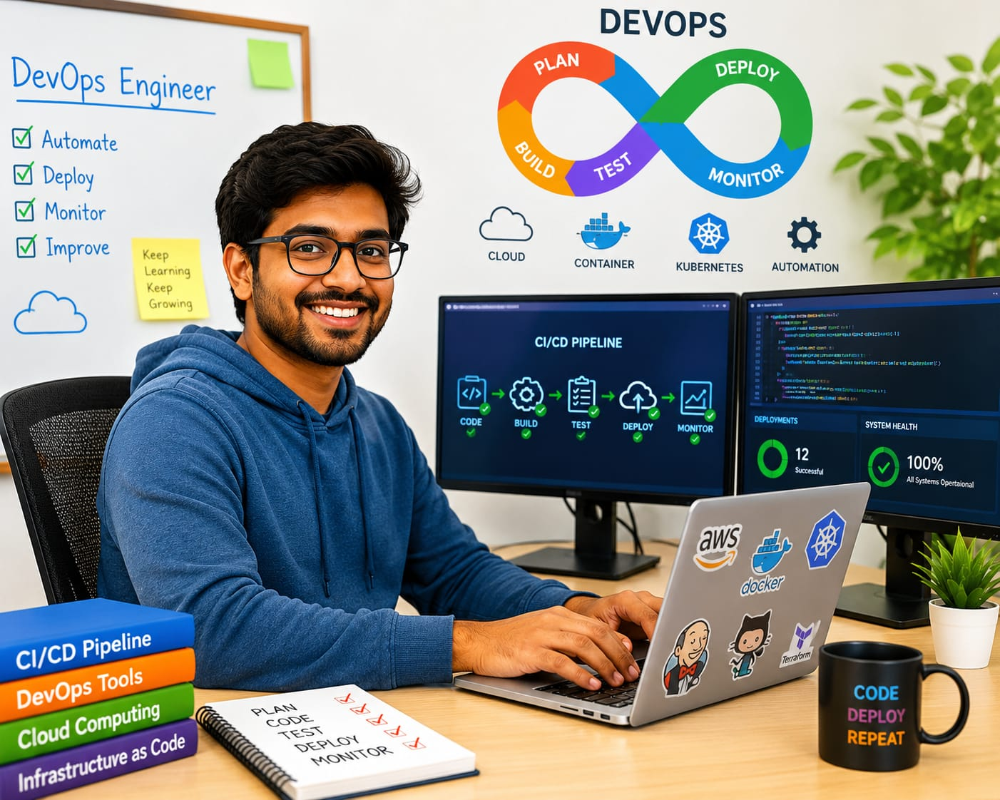

- You may be using Instagram, WhatsApp, or YouTube every day.
- Have you noticed that new features are regularly added to these apps?
- Behind the scenes, someone makes sure these updates are added smoothly without causing problems for users.
- The person who does this is called a DevOps Engineer.
- 👉 In simple words: DevOps Engineers help apps and websites receive updates smoothly and safely.
DevOps (Development and Operations) Engineer
🧑🎨 What Do They Do?

🎓 How to Become a DevOps Engineer
You have two options:
-
Start early with a Diploma
After Class 10, you can choose a relevant diploma course. Complete the diploma and join the second year of an engineering course by applying through lateral entry. -
Finish Class 12
Complete Class 11 and 12, then you can do a B.Tech./B.E. in the relevant field.
These beginner-level courses help students learn computer systems, networking, programming, automation, and software development fundamentals.
Diploma in Computer Science Engineering
Duration: 3 Years
Eligibility: Class 10 Pass
Entrance Exam: Polytechnic Entrance Exam / Merit-Based Admission
Diploma in Information Technology
Duration: 3 Years
Eligibility: Class 10 Pass
Entrance Exam: Polytechnic Entrance Exam / Merit-Based Admission
📝 Exam Details
(Click on the exam name to see full details)
Polytechnic Entrance Exam Merit-Based Admission Institute-Level TestNote: Many DevOps Engineers begin by learning programming, operating systems, networking, cloud platforms, automation tools, and software development before specializing in DevOps and infrastructure automation.
These degree programs help students learn software development, system administration, cloud computing, automation, DevOps tools, and application deployment.
B.Tech in Computer Science Engineering (DevOps & Agile Methodologies)
Duration: 4 Years
Eligibility: 10+2 Pass (with Physics, Chemistry, and Mathematics)
Entrance Exam: JEE Main / State Engineering Entrance Exams
Bachelor of Computer Applications (BCA) in DevOps
Duration: 3 Years
Eligibility: 10+2 Pass (Any stream; Computer Science or Mathematics preferred)
Entrance Exam: CUET-UG / University Merit Exams
B.Sc in Computer Science (DevOps & Systems Engineering)
Duration: 3 Years
Eligibility: 10+2 Pass (Science stream with Mathematics)
Entrance Exam: University Entrance Tests / Merit-based Admission
📝 Exam Details
(Click on the exam name to see full details)
JEE Main State Engineering Entrance Exams CUET-UG University Entrance Tests Merit-Based AdmissionNote: DevOps Engineers usually learn programming, operating systems, cloud platforms, automation tools, software deployment, and system management during their degree programs.
Students who complete a diploma can directly enter the second year of selected engineering degree programs through lateral entry.
B.Tech Lateral Entry in Computer Science Engineering
Duration: 3 Years
Eligibility: Diploma in Computer Science or Information Technology
Entrance Exam: State Lateral Entry Entrance Exams
B.Tech Lateral Entry in Information Technology
Duration: 3 Years
Eligibility: Diploma in Computer Science or Information Technology
Entrance Exam: State Lateral Entry Entrance Exams
Note: Diploma students can enter the second year of engineering programs and continue learning software development, cloud platforms, automation tools, system administration, and DevOps practices.
These advanced programs help professionals learn large-scale software deployment, automation, cloud infrastructure, DevOps practices, and enterprise system management.
M.Tech in Software Engineering and DevOps
Duration: 2 Years
Eligibility: Graduate (B.Tech/B.E. in CSE/IT or MCA with a valid GATE score)
Entrance Exam: GATE / University Entrance Exams
MCA – Cloud Computing and DevOps
Duration: 2 Years
Eligibility: Bachelor's degree in Computer Applications, Computer Science, Information Technology, or a related field, with Mathematics at 10+2 or graduation level.
Entrance Exam: University admission process
M.Sc. in Cloud Computing and DevOps
Duration: 2 Years
Eligibility: Bachelor's degree in Computer Science, Information Technology, Computer Applications, or a related field, with Mathematics or a relevant computer science background.
Entrance Exam: University admission process
📝 Exam Details
(Click on the exam name to see full details)
GATE University Entrance Exams Technical InterviewNote: At this stage, students learn advanced automation, cloud infrastructure management, CI/CD pipelines, DevOps tools, software deployment strategies, and enterprise-scale system operations.
Note:
(Age limits, marks, and admission process may vary depending on the college or state.
Below are some colleges that offer these courses.
These courses are available in many colleges and universities across India. You can choose colleges based on your location, budget, and entrance exams.)
🏛️ Colleges offering these courses in India
(Tap on a college to view the details)
After Class 10
ACMT Group of Colleges Government Polytechnic College, Kalamassery, Kerala The Maharaja Sayajirao University of Baroda, GujaratAfter Class 12
Alliance University, Bengaluru S-VYASA University, Bengaluru, Karnataka ISBM University, ChhattisgarhAfter Diploma (Lateral Entry)
Lovely Professional University, Punjab Manipal Institute of Technology, ManipalSTEP 1
Imagine you are working as a DevOps Engineer at a company like Instagram or YouTube.
STEP 2
Your job is to add new app updates smoothly.
STEP 3
Developers create new features and improvements for the app.
STEP 4
You make sure these updates are tested before they are released.
STEP 5
You helps to add the updates safely into the live app.
STEP 6
You monitor the app and quickly fix problems if anything goes wrong.
STEP 7
If you enjoy technology, automation, and solving problems, this career may suit you.
Where do DevOps Engineers work? (Job Roles + Growth)
DevOps Engineers work in : IT companies, Software companies, Cloud service providers, Technology startups, Web and mobile application companies, e-commerce companies, and companies with large-scale software systems.
🟢 Beginner Roles
Junior DevOps Engineer
(After Short-Term Certification / Diploma)
Helps teams test software updates and automate simple tasks.
DevOps Graduate Trainee
(After Diploma / BCA / B.Tech)
Assists senior engineers in managing software updates and systems.
🔵 Mid-Level Roles
DevOps Engineer
(After BCA / B.Tech + Certification)
Automates software updates and keeps systems running smoothly.
Site Reliability Engineer (SRE)
(After BCA / B.Tech + Experience)
Monitors systems and helps prevent service interruptions.
🟣 Advanced Roles
Principal DevOps Architect
(After MCA / M.Tech + Experience)
Designs large software delivery and automation systems.
DevOps Director / Infrastructure Head
(After Senior Leadership Experience)
Leads teams that manage software infrastructure and operations.
Software & IT Companies
Build, test, and deploy software updates for websites and applications.
Cloud Technology Companies
Manage cloud systems and automate software delivery processes.
Mobile App Companies
Ensure new app features are released smoothly without service interruptions.
E-Commerce Companies
Maintain systems that keep online shopping platforms running smoothly.
Banking & Financial Companies
Automate secure software deployments and system monitoring.
Remote DevOps Jobs
Monitor systems and manage software deployments from anywhere in the world.
(Click Yes or No for each question)
1. Do you enjoy using apps like Instagram, WhatsApp, YouTube, or Spotify?
2. Have you ever noticed that apps get new features and updates regularly?
3. Have you ever thought how new features are added to the apps without stopping them from working?
4. Imagine you are working as a DevOps Engineer for YouTube. The developers have created a new update for the YouTube app. Before the update is released, your job is to test it and make sure it works properly. You then help add the update to the app without stopping YouTube for users. Would you enjoy doing this kind of work?
5. The developers have created a new update for an online shopping app. If the update is not tested properly, it could cause problems for customers using the app. Your job is to test the update and find any problems before it is released. Finally, the update can be released without causing problems for customers. Would you enjoy doing this kind of work?